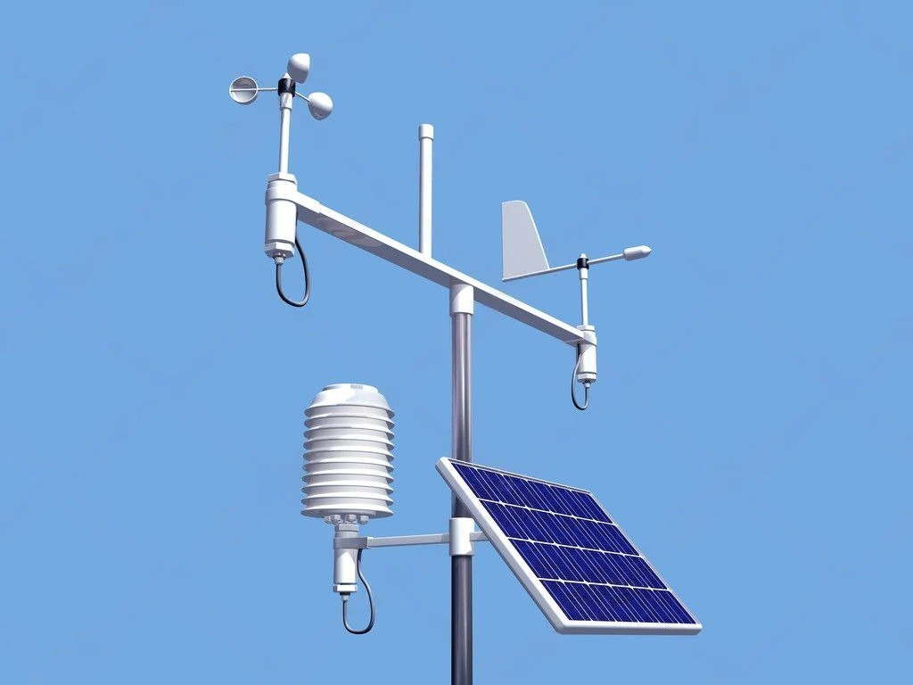

Projeto integrador - Alunos Técnico de Informática
Micro Estação Meteorológica

Nós, alunos do curso técnico de Informática da escola de Cuiabá, desenvolvemos um projeto integrador com o objetivo de construir uma micro estação meteorológica. Utilizando microcontroladores como ESP32 ou Arduino e sensores específicos, o sistema coleta dados ambientais como temperatura, umidade, precipitação e vento, depois os envia para uma plataforma online para visualização em tempo real. Também somos responsáveis pela criação da página web que exibe essas informações aos usuários.
Este projeto permite aplicar, de forma prática e interdisciplinar, os conhecimentos adquiridos em programação, robótica e desenvolvimento web, além de desenvolver habilidades como trabalho em equipe, inovação e resolução de problemas, demonstrando o papel da tecnologia no monitoramento ambiental.
Desenvolvimento
O desenvolvimento do projeto constitiu com a participação de todos dividindo em três grupos.
- Montagem.
- Banco de dados.
- Página Web.
Para cada grupo, o desenbolvimento é feito em três etapas, esboço, aplicação e finalização.
Esboço: Nesta fase inicial, são definidas as ideias preliminares e conceitos fundamentais do projeto. O grupo realiza pesquisas, elabora rascunhos e organiza o planejamento das atividades. É o momento de explorar possibilidades, levantar hipóteses e estruturar a base do que será desenvolvido nas etapas seguintes.
Aplicação: Com o esboço consolidado, passa-se para a execução prática das ideias. Nesta etapa, o grupo coloca em prática o planejamento elaborado anteriormente, utilizando ferramentas e técnicas adequadas ao objetivo do trabalho. É um momento de experimentação e construção efetiva, onde ajustes ainda podem ser feitos conforme necessário.
Finalização: A última etapa consiste no refinamento do trabalho realizado. O grupo revisa o conteúdo produzido, corrige eventuais erros, aprimora a apresentação e prepara o produto final para entrega ou exibição. Aqui, o foco é garantir a qualidade, coesão e clareza do material, consolidando todo o processo de desenvolvimento.